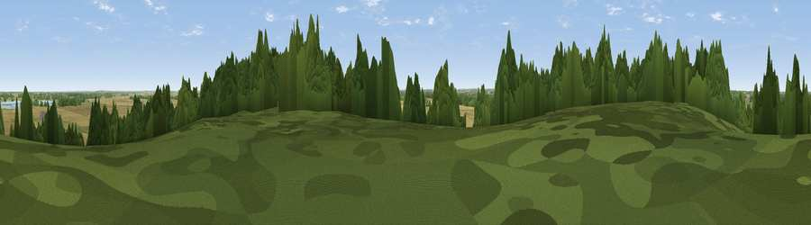

Viewpoint near Everton
#36836 in England · top 76% of its area beats it · near EvertonWhere it is
The exact computed spot (SK 67875 92025). Click the marker for map links.
The view, rendered

A 360° render of this exact spot computed from the terrain model, tree cover and land cover — summer colours, afternoon light, calibrated against photographs of famous viewpoints. Real trees, hedges and buildings will differ in detail.
The panorama
Grey silhouette: terrain skyline in each direction (720 bearings, Earth curvature and refraction included). Dashed green: skyline with trees (+15 m) and buildings (+8 m) as obstacles. Blue strip: how far the ground is visible on each bearing.
Where the view opens
Wedge length = distance to the farthest visible ground on that bearing (vegetation-aware). Rings at 10, 25 and 50 km.
What fills the view
57% cropland · 22% woodland · 17% grassland · 2% built-up · 2% water
Angular shares of the visible panorama (visual magnitude), not map area. Landscape diversity 0.49 (0–1 Shannon).
Key numbers
More beautiful places nearby
The staircase of upgrades: each row has a higher view potential than everything closer. Driving times are estimates from straight-line distance, calibrated against real road routing — check an actual route before setting out.
| Place | Direction | Drive | Score |
|---|---|---|---|
| Viewpoint near Everton | ESE · 0 km | ~2 min | 41.7 |
| Viewpoint near Torworth | S · 5 km | ~11 min | 42.6 |
| Harworth Colliery | WSW · 6 km | ~13 min | 61.8 |
| Beacon Hill | ESE · 6 km | ~13 min | 65.7 |
| Viewpoint near Maltby | W · 13 km | ~24 min | 70.8 |
| Viewpoint near Oughtibridge | W · 35 km | ~54 min | 72.5 |
| Viewpoint near Wharncliffe Side | W · 37 km | ~55 min | 75.2 |
| Tissington Hill | SW · 66 km | ~89 min | 75.5 |
53.42067, -0.98013 · source: screening · position refined by local search. Computed location — check access rights before visiting.